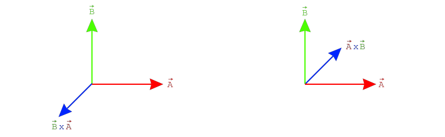

The cross product returns a new vector, perpendicular to both input vectors. This only makes sense in \(\mathbb{R}^{3}\), so the cross product is only defined for 3 dimensional vectors, vec3. Like the image below shows, for any two vectors \(\vec{A}\) and \(\vec{B}\), there are two vectors that are perpendicular to both. Depending on the order of the cross product, one or the other vector is returned. That is, the cross product is anti-commutativ: \(\vec{A} \times \vec{B} \neq \vec{B} \times \vec{A}\)

There is a relationship between the cross and dot products. Recall that the dot product has a relationship to the cosine of the angle between the two vectors: \(\vec{A} \cdot \vec{B} = \|\vec{A}\| \|\vec{B}\| cos(\theta)\). Simlarly, the cross product has a relationship to the sine of the angle between the two vectors: \(\|\vec{A} \times \vec{B}\| = \|\vec{A}\| \|\vec{B}\| sin(\theta) \).
The formula for the cross product actually comes from quaternion math. It's a bit involved and can be hard to grasp at first. Instead of presenting the formal definition, i'm going to present an easy way to memorize it. For the formal definition, check out this mathinsight.org post.
Given two vectors a and b, start by writing the x, y and z components of the result in a column.
result.x =
result.y =
result.z =
Fill out the right side of each column by multiplying the components of a and b in an x-y-z pattern. Starting from x the next component is always y, then z even when wrapping around: xyz, yzx and zxy.
result.x = a.y * b.z
// xyz pattern just wraps around
result.y = a.z * b.x
result.z = a.x * b.y
Finish the formula by subtracting the opposite products from the right size. So if the original product on the right side was a.y * b.z you would subtract a.z * b.y, the difference being that the components are flipped.
result.x = a.y * b.z - a.z * b.y
result.y = a.z * b.x - a.x * b.z
result.z = a.x * b.y - a.y * b.x
The code implementation for the above formula is trivial, since it was provided mostly as pseudo-code already. Unlike most vector operations, the cross product is only meaningful for vec3 objects.
vec3 Cross(vec3 a, vec3 b) {
vec3 result;
result.x = a.y * b.z - a.z * b.y
result.y = a.z * b.x - a.x * b.z
result.z = a.x * b.y - a.y * b.x
return result;
}If the method for finding the cross product above doesn't make sense, try playing a game of bomberman ;p. How does this work? Write the result vector as a row, vector a as a row and vector b as a row. This should leave all elements in a 3x3 matrix. For each component of the result, eliminate the row and column of the element. You will be left with a component of the result vector and a 2x2 sub-matrix. The value of that component in the result is the determinant of the 2x2 sub-matrix.
Finding the determinant of a 2x2 matrix is pretty easy. Given a matrix: \( \left(\begin{matrix} A & B \\ C & D \\ \end{matrix}\right)\) it's determinant is: \(AD - BC\).